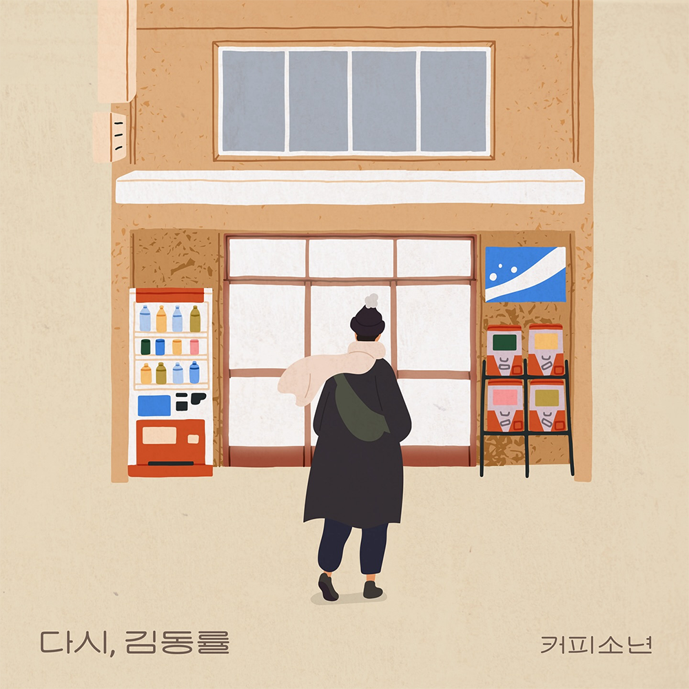

안녕하세요 라보엠입니다.
결혼전에 한동안 가수 커피소년을 좋아해서 많이 듣기도 했었고, 콘서트에 가기도 했었습니다. 오늘 퇴근길에 추천 노래로 커피소년의 노래 생일 축하합니다가 떠서 반복해서 들으며 옛 추억에 빠졌습니다.
오늘은 커피소년의 가장 최근 싱글 앨범이 있어서 소개해드리겠습니다. 제가 커피소년의 노래를 들으며 추억에 빠졌듯이, 커피소년은 김동률의 옛 테이프를 듣고 추억에 빠져 이 노래 다시, 김동률을 만들었습니다.
커피소년 - 다시, 김동률
커피소년 - 다시, 김동률 Release Note
어느 날 오후, 피드에서 나온 그의 음악을 듣곤
망각하고 있던 감성들이 한순간에 살아나는 것 같았다.
중학생 때 선물 받았던 전람회 테이프로 시작된
나의 유년 시절의 음악 여정은 듣고 들었던 그의 노래 [동반자]의 휘몰아치는 후반부처럼 내 인생도 그리 영화 같으리라 생각하게 했다.
어린 나이에 뭐가 그리 좋았는지 그 쓸쓸함과 몽글함이 좋았고 나도 그런 음악을 하리라 꿈을 꾸었던 것 같다.
하지만 오랜 시간 참 많이 듣고 동경하던, 지친 내 감정을 쏟아내고 또 충족했던 감성의 고향과도 같은 그의 음악을 한동안 듣지 못했던 것 같다.
결혼을 하고 아이가 생기고 또 현실을 살다 보니 음악을 차분히 들을 여유가 없었다. 아니 조금은 회피했던 것 같다.
사실 듣지 않을 이유도 그런 감성을 포기할 이유도 없는데 스스로가 단절시키려 했단 생각이 든다.
이제는 그 음악들과 함께 내 삶의 소중했던 추억 페이지들도 한 번씩 열어보아야겠다. 그것은 나를 있게 한 내 감성의 자산이며, 또 지금이 낭만이 되도록 할 에너지일 수 있지 않을까.. 또 누군가에겐 감성 열쇠일 내 음악도 다시금 열심을 내야겠다.
그날 우연이었지만 필연인 듯, 다시 내게 가르쳐준 그 음악가에게 감사의 마음을 전한다.
존경과 사랑을 담아 [다시, 김동률]
-
[Credits]
Lyrics by 커피소년
Composed by 커피소년
Arranged by 커피소년
Piano by 커피소년
Guitar by 최한얼
Bass by 김다빈
Drum by 이성산
Clarinet by 전보람
Mixed, Mastered by 김장효 @ Yeha Studio
Album Design by 천동인
커피소년 - 다시, 김동률 가사
1.
우연히 들리던 그 노래 따라
내 맘도 열리던 어느 이른 오후
살아가느라 오래 멈춰뒀던 내 기억이
찰나에 나를 스칠 때
따라 했던 선율이
삶에 지워진 음률이
찾을 수 없었던 내 청춘이
이 노래에 담겨있구나
지치고 힘든 삶에도
찬란한 추억 있음을
기억하렴 말해준
선물 같은 목소리
2.
쏟아질까 봐 단단히 여민 내 맘이
한순간 나를 덮을 때
따라 했던 선율이
삶에 지워진 음률이
찾을 수 없었던 내 청춘이
이 노래에 담겨있구나
지치고 힘든 삶에도
찬란한 추억 있음을
기억하렴 말해준
선물 같은 목소리
우~~~~
수백 번 다시 듣고 들었던
노래 하나에 전불 얻은 듯했던
풋풋했던 첫 마음이
노래에 담겨 나를 찾아와
기억하렴
기억하렴
기억하렴
말해준 선물 같은 목소리
선물 같은 목소리
